Overview.RmdThis document will demonstrate some commonly used features of GAMBLR.results and the other packages. It’s intent is to familiarize newcomers and current GAMBLR users to some recent improvements to the GAMBLRverse.
Requirements:
Have a GISTIC outputs named all_lesions.DLBCL.grch37.txt and scores.gistic in your working directory.
Have the most recent version (1.3+) of GAMBLR.data, GAMBLR.open, GAMBLR.utils, GAMBLR.viz and GAMBLR.results
library(GAMBLR)
suppressMessages(library(tidyverse))We normally start by retrieving the metadata and sub-setting it to the samples we desire. If working with mutations, you will probably want to drop all rows with the “mrna” seq_type. It’s safest to remove those from your table if you are working only with mutation data, although most functions should just ignore seq_type rows that are not relevant. This example also drops all FFPE samples and retains only DLBCL and FL pathology.
my_meta <- suppressMessages(get_gambl_metadata()) %>%
dplyr::filter(
pathology %in% c("FL", "DLBCL"),
ffpe_or_frozen == "frozen"
)
group_by(my_meta, seq_type, pathology) %>% count()
#> # A tibble: 6 × 3
#> # Groups: seq_type, pathology [6]
#> seq_type pathology n
#> <chr> <chr> <int>
#> 1 capture DLBCL 690
#> 2 capture FL 103
#> 3 genome DLBCL 428
#> 4 genome FL 260
#> 5 mrna DLBCL 963
#> 6 mrna FL 79
# drop mrna
my_meta <- dplyr::filter(my_meta, seq_type != "mrna")
group_by(my_meta, seq_type, pathology) %>% count()
#> # A tibble: 4 × 3
#> # Groups: seq_type, pathology [4]
#> seq_type pathology n
#> <chr> <chr> <int>
#> 1 capture DLBCL 690
#> 2 capture FL 103
#> 3 genome DLBCL 428
#> 4 genome FL 260If you are interested in an analysis of coding mutations
(i.e. mutations in coding exons), you can load them for a set of samples
that span exome/genome seq_type in a single step. Seasoned GAMBLRs will
recall that this used to require two separate calls to
get_coding_ssm, but this is no longer an issue thanks to
get_all_coding_ssm. The latter now requires that you
specify a metadata table via these_samples_metadata so it
can unambiguously determine which mutations to give you for each
seq_type for those samples that have both data types. A column
maf_seq_type is added to the output so you can always
determine which mutations came from genome vs capture
data.
dna_meta <- dplyr::filter(my_meta, seq_type != "mrna")
all_coding <- suppressMessages(get_all_coding_ssm(
these_samples_metadata = dna_meta,
projection = "hg38",
include_silent = FALSE
))
nrow(all_coding)
#> [1] 366559
# seq_type of each mutation is available via the maf_seq_type column
table(all_coding$maf_seq_type)
#>
#> capture genome
#> 263848 102711If you look closely at the output of any function that returns a
MAF-like result (e.g. get_all_coding_ssm) you will notice
these are no longer just standard data frames. When you print the
contents, you will see “MAF Data Object” followed by the genome build.
This value is embedded directly in the data. The genome build can be
retrieved programmatically with the get_genome_build
function. This is one of a few special data types that will have a
built-in attribute genome_build. There are a bundle of S3
methods in GAMBLR.utils that ensure these attributes remain
stuck to these data types while you manipulate them with dplyr
verbs.
head(all_coding, 1)
#> genomic_data Object
#> Genome Build: hg38
#> Showing first 10 rows:
#> Hugo_Symbol Entrez_Gene_Id Center NCBI_Build Chromosome Start_Position
#> 1 OR4F5 0 . GRCh38 chr1 69634
#> End_Position Strand Variant_Classification Variant_Type Reference_Allele
#> 1 69634 + Missense_Mutation SNP T
#> Tumor_Seq_Allele1 Tumor_Seq_Allele2 dbSNP_RS dbSNP_Val_Status
#> 1 T A rs745433879 NA
#> Tumor_Sample_Barcode Matched_Norm_Sample_Barcode Match_Norm_Seq_Allele1
#> 1 DLBCL11262T 04-24937N-Schmitz T
#> Match_Norm_Seq_Allele2 Tumor_Validation_Allele1 Tumor_Validation_Allele2
#> 1 T NA NA
#> Match_Norm_Validation_Allele1 Match_Norm_Validation_Allele2
#> 1 NA NA
#> Verification_Status Validation_Status Mutation_Status Sequencing_Phase
#> 1 NA NA NA NA
#> Sequence_Source Validation_Method Score BAM_File Sequencer Tumor_Sample_UUID
#> 1 NA NA NA NA NA NA
#> Matched_Norm_Sample_UUID HGVSc HGVSp HGVSp_Short Transcript_ID
#> 1 NA c.544N>A p.Cys182Ser p.C182S ENST00000335137
#> Exon_Number t_depth t_ref_count t_alt_count n_depth n_ref_count n_alt_count
#> 1 1/1 57 0 57 17 17 0
#> maf_seq_type
#> 1 capture
maf_selected <- select(all_coding, c(1:7))
maf_filtered <- all_coding %>% filter(Hugo_Symbol == "EZH2")
maf_mutated <- mutate(all_coding, new_column = "justatest")
get_genome_build(all_coding)
#> [1] "hg38"
get_genome_build(maf_selected)
#> [1] "hg38"
get_genome_build(maf_filtered)
#> [1] "hg38"
get_genome_build(maf_mutated)
#> [1] "hg38"This built-in feature now protects against accidental mixing of the two coordinate systems. When we provide this data to another function, the genome_build argument is no longer required because it’s inferred from the data.
# This doesn't work
coding_tabulated_df <- get_coding_ssm_status(
maf_data = all_coding,
these_samples_metadata = dna_meta,
genome_build = "grch37"
)
# Error in `get_coding_ssm_status()`:
# ! you have specified a genome_build that doesn't match the
# genome_build attached to maf_data
# This will also fail for a different reason.
# The automatic annotation of hotspots is not available for hg38
coding_tabulated_df <- get_coding_ssm_status(
maf_data = all_coding,
these_samples_metadata = dna_meta
)
# Error in check_get_projection(list(this_maf = mutation_maf), "grch37", :
# This function currently only supports grch37
# The workaround until someone resolves this is to disable that feature
coding_tabulated_df <- get_coding_ssm_status(
maf_data = all_coding,
these_samples_metadata = dna_meta,
include_hotspots = FALSE
)
head(coding_tabulated_df[,c(1:10)])
#> # A tibble: 6 × 10
#> sample_id TNFRSF14 NOL9 KLHL21 CAMTA1 PIK3CD MTOR SPEN E2F2 ID3
#> <chr> <dbl> <dbl> <dbl> <dbl> <dbl> <dbl> <dbl> <dbl> <dbl>
#> 1 FL1011T1 0 0 0 0 0 0 0 0 0
#> 2 FL3001T1 1 0 0 0 0 0 0 0 0
#> 3 FL1015T1 0 0 0 0 0 0 0 0 0
#> 4 FL1015T2 0 0 0 0 0 0 0 0 0
#> 5 FL1002T1 1 0 0 0 0 0 0 0 0
#> 6 FL1002T2 1 0 0 0 0 0 0 0 0
coding_tabulated_df = column_to_rownames(coding_tabulated_df,"sample_id")
colSums(coding_tabulated_df)[c(1:20)]
#> TNFRSF14 NOL9 KLHL21 CAMTA1 PIK3CD MTOR SPEN E2F2
#> 311 67 43 36 46 45 106 9
#> ID3 ARID1A LAPTM5 COL16A1 AGO4 MAP7D1 ZC3H12A RRAGC
#> 34 124 42 31 8 11 56 58
#> CDKN2C JAK1 DNAJC6 FUBP1
#> 6 25 15 25Testing some other visualizations
heatmap_mutation_frequency_bin
my_meta <- GAMBLR.open::get_gambl_metadata() %>%
filter(cohort %in% "FL_Dreval")
# Use the new approach to embed genome_build in your regions_bed
# and create/reformat the name column
my_regions <- create_bed_data(
GAMBLR.data::hg38_ashm_regions,
genome_build = "hg38",
fix_names = "concat",
concat_cols = c("gene", "region"), sep = "-"
)
meta_columns <- c("pathology", "lymphgen", "COO_consensus", "DHITsig_consensus")
all_wide <- calc_mutation_frequency_bin_regions(
regions_bed = my_regions,
these_samples_metadata = my_meta,
slide_by = 100,
window_size = 500,
return_format = "wide"
)
all_wide <- all_wide %>%
column_to_rownames("sample_id")
# this can be used as mut_freq_matrix
colnames(all_wide)[c(1:10)]
#> [1] "chr1_6600822" "chr1_6600922" "chr1_6601022" "chr1_6601122" "chr1_6601222"
#> [6] "chr1_6601322" "chr1_6601422" "chr1_6601522" "chr1_6601822" "chr1_6601922"
head(rev(sort(colSums(all_wide))))
#> chr18_63318795 chr18_63318695 chr18_63318895 chr18_63318595 chr18_63318995
#> 1336 1334 1291 1268 1128
#> chr22_22888074
#> 1102
suppressMessages(
heatmap_mutation_frequency_bin(
regions_bed = head(my_regions, 25),
these_samples_metadata = my_meta,
metadataColumns = meta_columns,
sortByColumns = meta_columns,
backgroundColour = "white",
label_regions_rotate = 90
)
)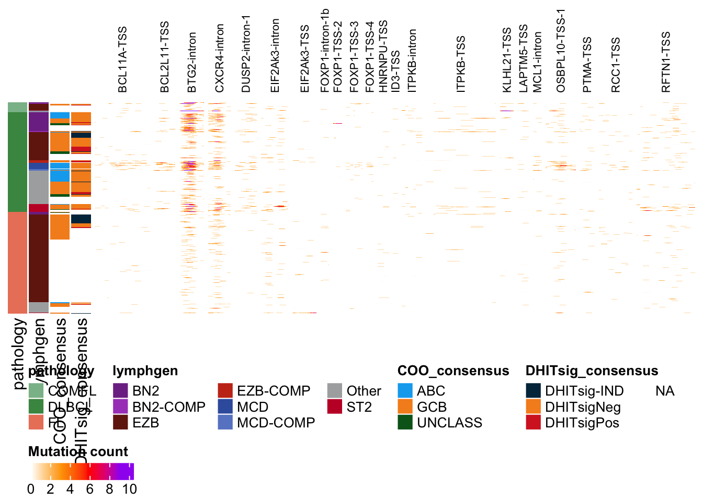
This also works seamlessly for capture data.
my_other_regions <- create_bed_data(
GAMBLR.data::grch37_ashm_regions,
fix_names = "concat",
concat_cols = c("gene", "region"), sep = "-"
)
cap_meta <- GAMBLR.results::get_gambl_metadata() %>%
dplyr::filter(cohort == "dlbcl_schmitz", seq_type != "mrna")
meta_columns <- c("pathology", "lymphgen", "COO_consensus", "seq_type")
heatmap_mutation_frequency_bin(
regions_bed = my_other_regions,
these_samples_metadata = cap_meta,
metadataColumns = meta_columns,
sortByColumns = meta_columns,
label_regions_rotate = 90,
backgroundColour = "white"
)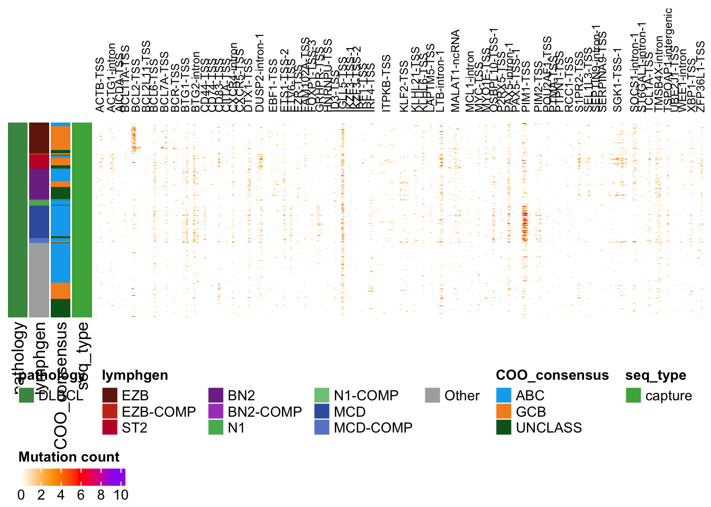
Note that both genome builds are supported and the correct coordinate system is inferred from regions_bed.
# use the original my_regions (grch37)
heatmap_mutation_frequency_bin(
regions_bed = my_regions,
these_samples_metadata = cap_meta,
metadataColumns = meta_columns,
sortByColumns = meta_columns,
label_regions_rotate = 90,
backgroundColour = "white"
)Want to visualize the mutation pattern of a single gene? Sounds like
you want a pretty_lollipop_plot
lolipop_result <- pretty_lollipop_plot(all_coding, "MYC")
lolipop_result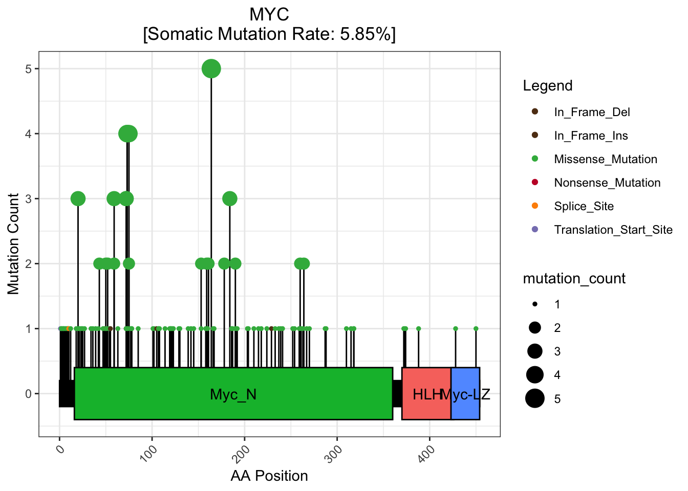
Planning to compare the mutation pattern of a set of genes across
many patients, possibly spanning multiple pathologies? This is
definitely a job for prettyOncoplot
#| warning: false
#| message: false
my_meta <- GAMBLR.results::get_gambl_metadata() %>%
dplyr::filter(
pathology %in% c("FL", "DLBCL"),
ffpe_or_frozen == "frozen",
seq_type != "mrna"
)
#> 3258 capture samples are missing a value for protocol. Assuming Exome.
#> 63 biopsies are missing from the biopsy metadata. This should be fixed!
#> affected cohorts: DLBCL_LSARP_Trios,SMZL_Strefford,cHL_Maura
#> 110 biopsies with discrepancies in the pathology field. This should be fixed!
#> 10 biopsies with discrepancies in the time_point field. This should be fixed!
prettyOncoplot(all_coding,
genes = c("EZH2", "CREBBP", "MYD88", "CCND3", "KMT2D", "IGLL5"),
these_samples_metadata = my_meta
)
#> There are no missing genes during onco matrix assembly.
#> You should name at least one metadata column to show as an annotation. Defaulting to pathology
#> All mutation types: Missense_Mutation, Multi_Hit, Splice_Site,
#> Frame_Shift_Del, In_Frame_Del, Nonsense_Mutation, Frame_Shift_Ins,
#> In_Frame_Ins, Translation_Start_Site, Nonstop_Mutation.
#> `alter_fun` is assumed vectorizable. If it does not generate correct
#> plot, please set `alter_fun_is_vectorized = FALSE` in `oncoPrint()`.
#> No legend element is put in the last 1 row under `nrow = 3`, maybe you
#> should set `by_row = FALSE`? Reset `nrow` to 2.
#> No legend element is put in the last 1 row under `nrow = 3`, maybe you
#> should set `by_row = FALSE`? Reset `nrow` to 2.
#> No legend element is put in the last 1 row under `nrow = 3`, maybe you
#> should set `by_row = FALSE`? Reset `nrow` to 2.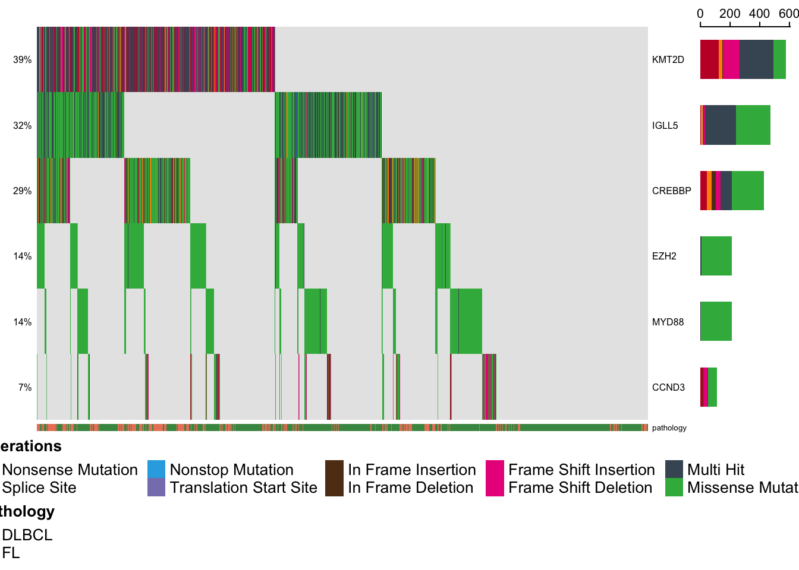
Letting prettyOncoplot decide which genes to include based on mutation frequency in the data.
prettyOncoplot(all_coding,
minMutationPercent = 5,
simplify_annotation = TRUE,
these_samples_metadata = my_meta
)
#> creating oncomatrix with 182 genes
#> There are no missing genes during onco matrix assembly.
#> You should name at least one metadata column to show as an annotation. Defaulting to pathology
#> All mutation types: Missense, Truncating, Splice_Site.
#> `alter_fun` is assumed vectorizable. If it does not generate correct
#> plot, please set `alter_fun_is_vectorized = FALSE` in `oncoPrint()`.
#> No legend element is put in the last 1 row under `nrow = 3`, maybe you
#> should set `by_row = FALSE`? Reset `nrow` to 2.
#> No legend element is put in the last 1 row under `nrow = 3`, maybe you
#> should set `by_row = FALSE`? Reset `nrow` to 2.
#> No legend element is put in the last 1 row under `nrow = 3`, maybe you
#> should set `by_row = FALSE`? Reset `nrow` to 2.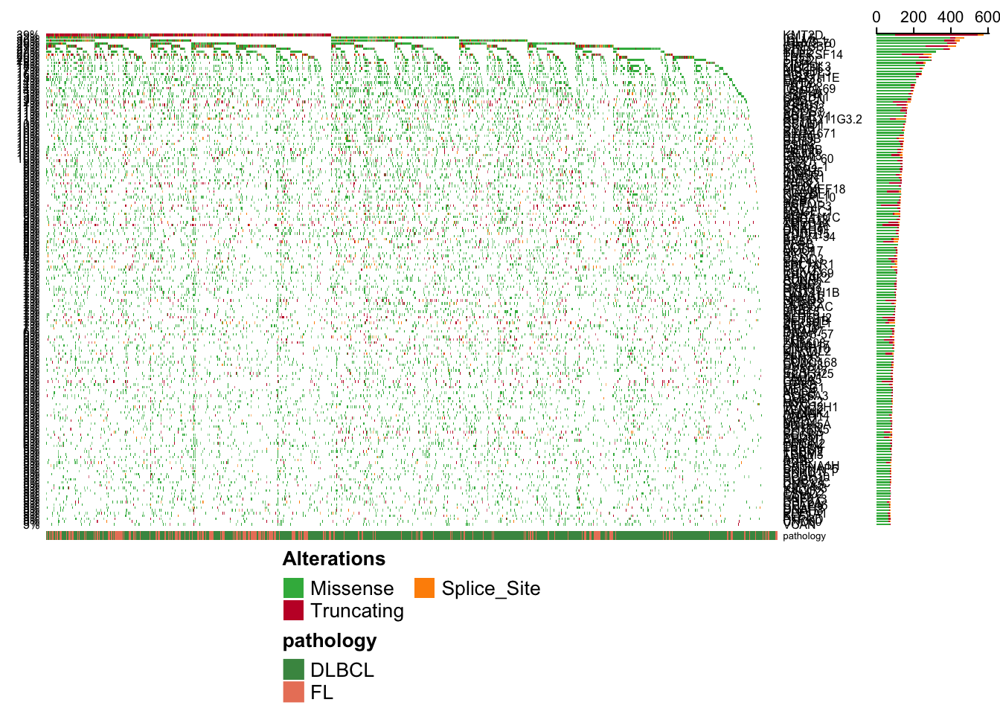
Attaching non-coding mutation data to an oncoplot involves first creating an aSHM count matrix.
#| warning: false
#| message: false
my_meta <- GAMBLR.open::get_gambl_metadata() %>%
filter(cohort %in% "FL_Dreval")
#> Using the bundled metadata in GAMBLR.data...
# Use the new approach to embed genome_build in your regions_bed
# and create/reformat the name column
my_regions <- create_bed_data(
GAMBLR.data::hg38_ashm_regions,
genome_build = "hg38",
fix_names = "concat",
concat_cols = c("gene", "region"), sep = "-"
)
print(my_regions)
#> BED Data Object
#> Genome Build: hg38
#> Showing first 10 rows:
#> chrom start end name region regulatory_comment
#> 1 chr1 6601422 6602642 KLHL21-TSS TSS <NA>
#> 2 chr1 23559093 23559344 ID3-TSS TSS <NA>
#> 3 chr1 28506039 28509827 RCC1-TSS TSS <NA>
#> 4 chr1 30756165 30759164 LAPTM5-TSS TSS <NA>
#> 5 chr1 150578338 150579659 MCL1-intron intron <NA>
#> 6 chr2 88605321 88609578 EIF2Ak3-intron intron <NA>
#> 7 chr2 88625938 88628063 EIF2Ak3-TSS TSS <NA>
#> 8 chr2 231707930 231709587 PTMA-TSS TSS <NA>
#> 9 chr2 156812978 156814787 FCRL3-TSS TSS <NA>
#> 10 chr1 203305570 203306650 BTG2-intron intron active_promoter
ashm_mat <- get_ashm_count_matrix(
regions_bed = my_regions,
these_samples_metadata = my_meta,
this_seq_type = "genome"
)
#> Streamlined is set to TRUE, this function will disregard anything specified with basic_columns
#> To return a MAF with standard 45 columns, set streamlioned = FALSE and basic_columns = TRUE
#> To return a maf with all (116) columns, set streamlined = FALSE and basic_columns = FALSE
#> Joining with `by = join_by(sample_id, region_name)`
dim(ashm_mat)
#> [1] 443 130
#| warning: false
#| message: false
# get coding mutations (hg38)
my_coding <- get_all_coding_ssm(
these_samples_metadata = my_meta,
include_silent = FALSE,
projection = "hg38"
)get_ssm_by_samples
# get a few exomes and a few genomes
some_exome <- get_gambl_metadata() %>% dplyr::filter(
seq_type == "capture",
sample_id %in% c(
"00-22011_tumorB",
"PA064",
"01-1961"
)
)
some_genome <- get_gambl_metadata() %>% dplyr::filter(
seq_type == "genome",
sample_id %in% c(
"HTMCP-01-06-00485-01A-01D",
"DOHH-2",
"SU-DHL-10"
)
)
some_meta <- bind_rows(some_exome, some_genome)
some_from_samples <- get_ssm_by_samples(
these_samples_metadata = some_meta,
projection = "hg38"
)
#> [1] "The value of this_seq_type was ignored and all samples in these_samples_metadata and these_sample_ids (if provided) were included"
group_by(some_from_samples, Tumor_Sample_Barcode, maf_seq_type) %>% tally()
#> # A tibble: 6 × 3
#> # Groups: Tumor_Sample_Barcode [6]
#> Tumor_Sample_Barcode maf_seq_type n
#> <chr> <chr> <int>
#> 1 00-22011_tumorB capture 1002
#> 2 01-1961 capture 547
#> 3 DOHH-2 genome 21930
#> 4 HTMCP-01-06-00485-01A-01D genome 2165
#> 5 PA064 capture 1056
#> 6 SU-DHL-10 genome 26707We have to link our metadata to the numeric data to include it in the prettyOncoplot output.
#| warning: false
#| message: false
# join the aSHM matrix to the metadata
meta_with_ashm <- rownames_to_column(ashm_mat,
"sample_id") %>%
left_join(my_meta, .)
#> Joining with `by = join_by(sample_id)`
prettyOncoplot(
maf_df = my_coding,
these_samples_metadata = meta_with_ashm,
metadataColumns = c("pathology", "cohort"),
numericMetadataColumns = colnames(ashm_mat),
stacked = TRUE,
minMutationPercent = 5,
sortByColumns = c("pathology", "cohort")
)
#> stacked mode is only compatible in combination with simplify = TRUE. Setting this for you.
#> creating oncomatrix with 80 genes
#> There are no missing genes during onco matrix assembly.
#> The column(s) specified both in metadata and numeric metadata will be plotted as numeric values...
#> dropping 22 genes due to sparseness
#> HNRNPU-TSS,EIF2Ak3-TSS,LPP-intron-1,CD44-TSS,FOXP1-TSS-2,FOXP1-intron-1a,FANK1-TSS,NFKBIZ-TSS-1,SEPTIN9-intron-1,FOXP1-TSS-1,MEF2C-TSS-1,WEE1-intron,MCL1-intron,SEPTIN9-intron-3,P2RX5-TSS,ID3-TSS,NFKBIZ-TSS-2,RNF144B-TSS,RHEX-TSS,FOXP1-intron-1b,KLHL21-TSS,FCRL3-TSS
#> All mutation types: Missense, Truncating, Splice_Site.
#> `alter_fun` is assumed vectorizable. If it does not generate correct
#> plot, please set `alter_fun_is_vectorized = FALSE` in `oncoPrint()`.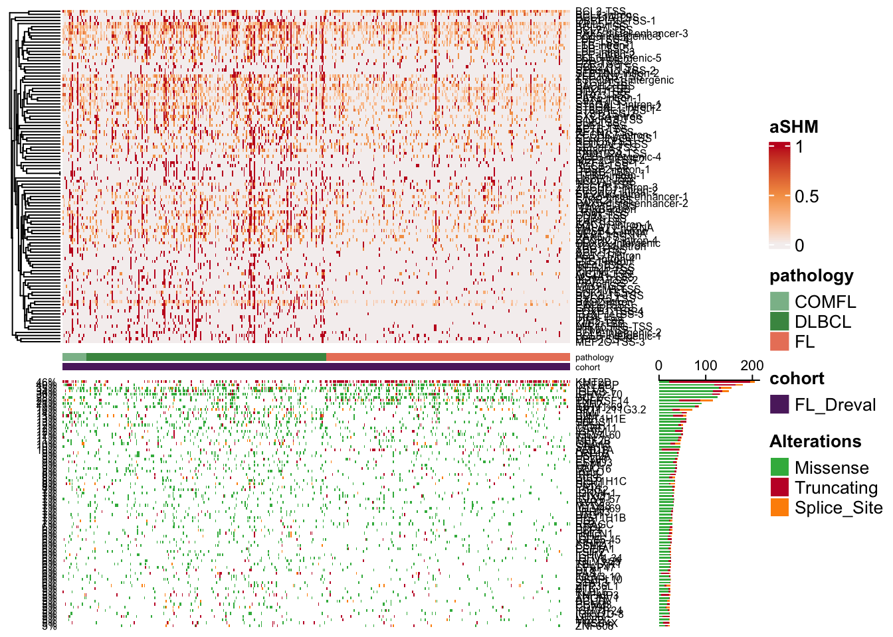
Comparing two groups with prettyCoOncoplot
prettyCoOncoplot(all_coding,
my_meta,
genes = c(
"EZH2", "CREBBP", "MYD88", "CCND3",
"KMT2D", "IGLL5", "CARD11", "BTG1", "ATP6V1B2"
),
"pathology",
label1 = "FL",
label2 = "DLBCL",
comparison_values = c("FL", "DLBCL")
)Want to know which mutations are more prevalent in one group of
patients vs another? You need prettyForestPlot in your
life!
out_list = prettyForestPlot(all_coding,
metadata = my_meta,
genes = c("EZH2", "CREBBP", "MYD88", "CCND3", "KMT2D",
"IGLL5", "CARD11", "BTG1", "ATP6V1B2"),
comparison_column = "pathology",
comparison_values = c("FL", "DLBCL"),
separate_hotspots = FALSE,
comparison_name = "FL vs DLBCL"
)
out_list$arranged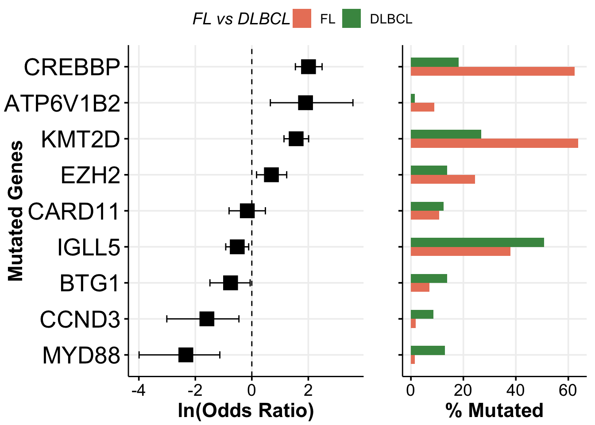
There are other data types that benefit from the same approach.
Another major player is segmented copy number results (seg_data), which
you can obtain from get_cn_segments in GAMBLR.results or
GAMBLR.data.
#| warning: false
#| message: false
all_segments <- get_cn_segments()
#> no metadata provided
#> will get segments for all available genome and capture samples
#> dummy segments are not annotated in the inputs
#> fill_missing_with parameter will be ignored
print(head(all_segments))
#> SEG Data Object
#> Genome Build: grch37
#> Showing first 10 rows:
#> ID chrom start end LOH_flag log.ratio seg_seq_type
#> 1 00-22011_tumorB 1 10001 69372 NA 0.0000 capture
#> 2 00-22011_tumorB 1 69373 10395622 NA 1.0000 capture
#> 3 00-22011_tumorB 1 10395622 12783034 NA 0.0000 capture
#> 4 00-22011_tumorB 1 12783034 13292951 NA -2.0000 capture
#> 5 00-22011_tumorB 1 13292951 33768448 NA 0.0000 capture
#> 6 00-22011_tumorB 1 33768448 33775298 NA 2.5453 capture
#> CN
#> 1 2.00000
#> 2 4.00000
#> 3 2.00000
#> 4 0.50000
#> 5 2.00000
#> 6 11.67459
get_genome_build(all_segments)
#> [1] "grch37"Some new functionality for copy number data is implemented in this function:
GAMBLR.utils::segmented_data_to_cn_matrix
This function uses one of four approaches to convert segmented data into a matrix of CN values. The most flexible approach is to let it automatically split the genome into equal-sized bins for you. It then uses the data in seg_data to infer the copy number value for each bin using all overlapping segments. The interface for this function has changed to add flexibility and transparency.
#| warning: false
#| message: false
start_time <- Sys.time()
cn_mat <- segmented_data_to_cn_matrix(
seg_data = all_segments,
n_bins_split = 500,
strategy = "auto_split", # this is the default
these_samples_metadata = dna_meta,
fill_missing_with = "diploid",
adjust_for_ploidy = TRUE
# This centers all samples using their genome-wide average CN
)
#> [1] "0 rows with NA values"
complete_time <- Sys.time()
# this process is slow if you use a lot of bins
complete_time - start_time
#> Time difference of 27.71177 secs
pretty_CN_heatmap(cn_mat,
scale_by_sample = FALSE,
these_samples_metadata = dna_meta
)
#> Warning: The input is a data frame-like object, convert it to a matrix.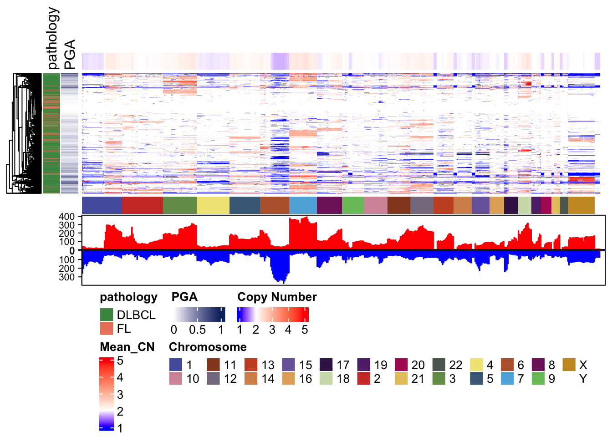
For the GISTIC strategy, it internally relies on
gistic_to_cn_state_matrix.
#| warning: false
#| message: false
library(ComplexHeatmap)
cn_mat <- segmented_data_to_cn_matrix(
seg_data = all_segments,
strategy = "GISTIC",
these_samples_metadata = dna_meta,
adjust_for_ploidy = TRUE,
gistic_lesions_file = "all_lesions.DLBCL.grch37.txt"
)
#> [1] "0 rows with NA values"
#> [1] "0 rows with NA values"
pretty_CN_heatmap(cn_state_matrix = cn_mat,
scale_by_sample = FALSE,
these_samples_metadata = dna_meta
)
#> Warning: The input is a data frame-like object, convert it to a matrix.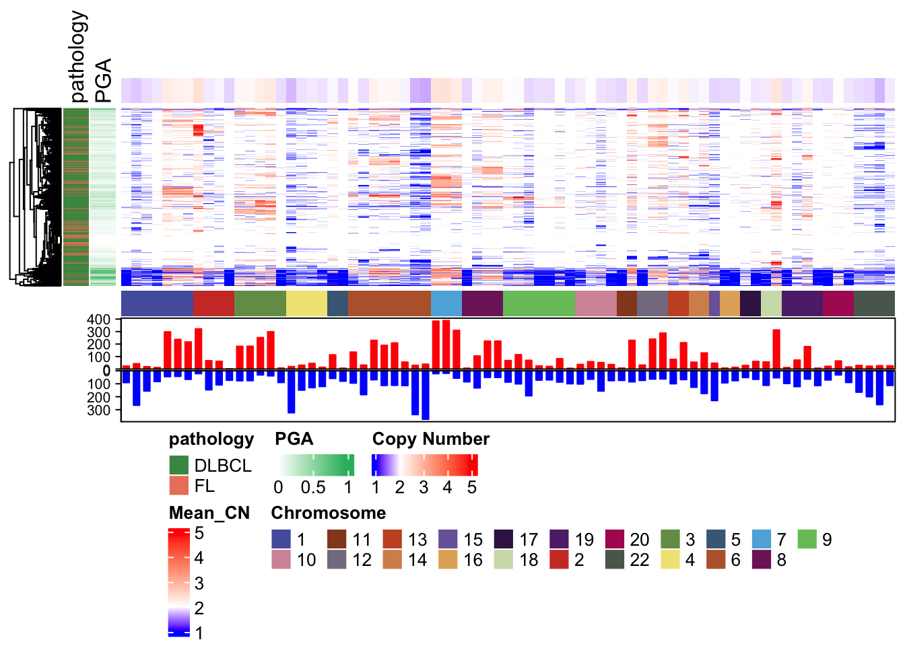
This can also be used directly if you want to sanity check the results.
#| warning: false
#| message: false
gistic_wide <- gistic_to_cn_state_matrix(
seg_data = all_segments,
gistic_lesions_file = "all_lesions.DLBCL.grch37.txt",
wide_peaks = TRUE,
these_samples_metadata = dna_meta,
scale_by_sample = TRUE,
fill_missing_with = "diploid" # Note: this needs to be set to diploid for now
)
#> Warning: The input is a data frame-like object, convert it to a matrix.
#> [1] "0 rows with NA values"
#> Warning: The input is a data frame-like object, convert it to a matrix.
h_saved <- Heatmap(cn_mat,
show_row_names = FALSE,
column_names_gp = gpar(fontsize = 5),
clustering_distance_columns = "binary"
)
#> Warning: The input is a data frame-like object, convert it to a matrix.
h_saved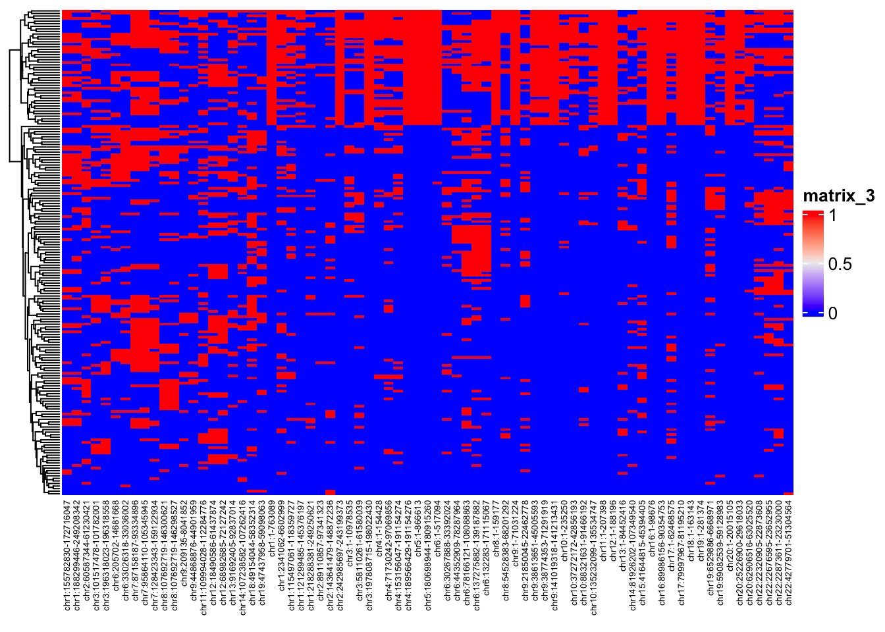
Another visualization for GISTIC outputs:
prettyChromoplot
#| warning: false
#| message: false
genes = c("MYC","FCGR2B","TNFRSF14","FAS","PTEN","B2M","RB1","TCL1A","CD70",
"BCL2","KLHL14","TCF4","REL","BCL6","HIST1H1C","SMARCA4","CDKN2A","RHOA",
"TNFAIP3","TP53","CDK14","RELN","ETS1","MDM1","MIR17HG","CD58","HNRNPD",
"TOX","PRAME","CD38")
gene_bed = select(grch37_gene_coordinates,-1) %>% #remove ensembl ID column
dplyr::filter(hugo_symbol %in% genes) %>% #keep genes of interest
mutate(length = end - start,mid = start + length/2) %>%
mutate(start = mid,end=start+1) %>%
unique() %>%
create_bed_data(genome_build = "grch37") #convert to bed_data format
prettyChromoplot(scores_path = "scores.gistic",
labels_bed = gene_bed)
#> Rows: 31533 Columns: 8
#> ── Column specification ────────────────────────────────────────────────────────
#> Delimiter: "\t"
#> chr (1): Type
#> dbl (7): Chromosome, Start, End, -log10(q-value), G-score, average amplitude...
#>
#> ℹ Use `spec()` to retrieve the full column specification for this data.
#> ℹ Specify the column types or set `show_col_types = FALSE` to quiet this message.
#> Running in default mode of any...
#> # A tibble: 31,533 × 15
#> Chromosome Start End `-log10(q-value)` `G-score` `average amplitude`
#> <chr> <dbl> <dbl> <dbl> <dbl> <dbl>
#> 1 1 10001 768252 0 0.0650 0.296
#> 2 1 768253 768447 0 0.0685 0.330
#> 3 1 768448 769962 0 0.0680 0.332
#> 4 1 769963 770180 0 0.0738 0.344
#> 5 1 770181 770734 0 0.0747 0.349
#> 6 1 770735 771656 0 0.0751 0.347
#> 7 1 771657 773105 0 0.0793 0.357
#> 8 1 773106 776545 0 0.0904 0.396
#> 9 1 776546 783070 0 0.0864 0.480
#> 10 1 783071 785521 0 0.0874 0.469
#> # ℹ 31,523 more rows
#> # ℹ 9 more variables: frequency <dbl>, Type <chr>, fill <chr>, start <dbl>,
#> # end <dbl>, name <chr>, hugo_symbol <chr>, length <dbl>, mid <dbl>
#> chrom start end name hugo_symbol length mid
#> 1 13 92003453 92003454 MIR17HG MIR17HG 6759 92003454
#> 2 6 138196400 138196401 TNFAIP3 TNFAIP3 16098 138196400
#> 3 14 96178418 96178419 TCL1A TCL1A 4229 96178418
#> 4 10 90762978 90762979 FAS FAS 25128 90762978
#> 5 18 53110790 53110791 TCF4 TCF4 442456 53110790
#> 6 12 68696192 68696193 MDM1 MDM1 59938 68696192
#> 7 9 21981525 21981526 CDKN2A CDKN2A 27549 21981526
#> 8 6 26056333 26056334 HIST1H1C HIST1H1C 731 26056334
#> 9 10 89677278 89677279 PTEN PTEN 108817 89677278
#> 10 18 30302829 30302830 KLHL14 KLHL14 100391 30302830
#> 11 13 48967004 48967005 RB1 RB1 178235 48967004
#> 12 18 60888970 60888971 BCL2 BCL2 196782 60888970
#> 13 22 22895945 22895946 PRAME PRAME 11645 22895946
#> 14 1 2491949 2491950 TNFRSF14 TNFRSF14 9743 2491950
#> 15 15 45007375 45007376 B2M B2M 7400 45007375
#> 16 19 11123834 11123835 SMARCA4 SMARCA4 104473 11123834
#> 17 4 83284653 83284654 HNRNPD HNRNPD 22005 83284654
#> 18 3 187451340 187451341 BCL6 BCL6 24350 187451340
#> 19 8 59874872 59874873 TOX TOX 313790 59874872
#> 20 7 90467821 90467822 CDK14 CDK14 744167 90467822
#> 21 4 15817375 15817376 CD38 CD38 74955 15817376
#> 22 11 128393054 128393055 ETS1 ETS1 128797 128393054
#> 23 8 128750677 128750678 MYC MYC 5994 128750677
#> 24 7 103371097 103371098 RELN RELN 517732 103371097
#> 25 1 117085409 117085410 CD58 CD58 56504 117085409
#> 26 19 6593654 6593655 CD70 CD70 20920 6593654
#> 27 3 49423504 49423505 RHOA RHOA 53853 49423504
#> 28 17 7577976 7577977 TP53 TP53 25759 7577976
#> 29 1 161599772 161599773 FCGR2B FCGR2B 97343 161599772
#> 30 2 61133700 61133701 REL REL 50089 61133700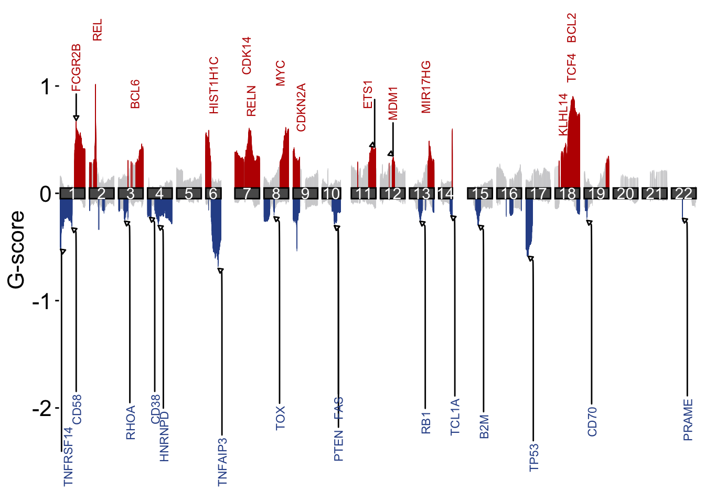